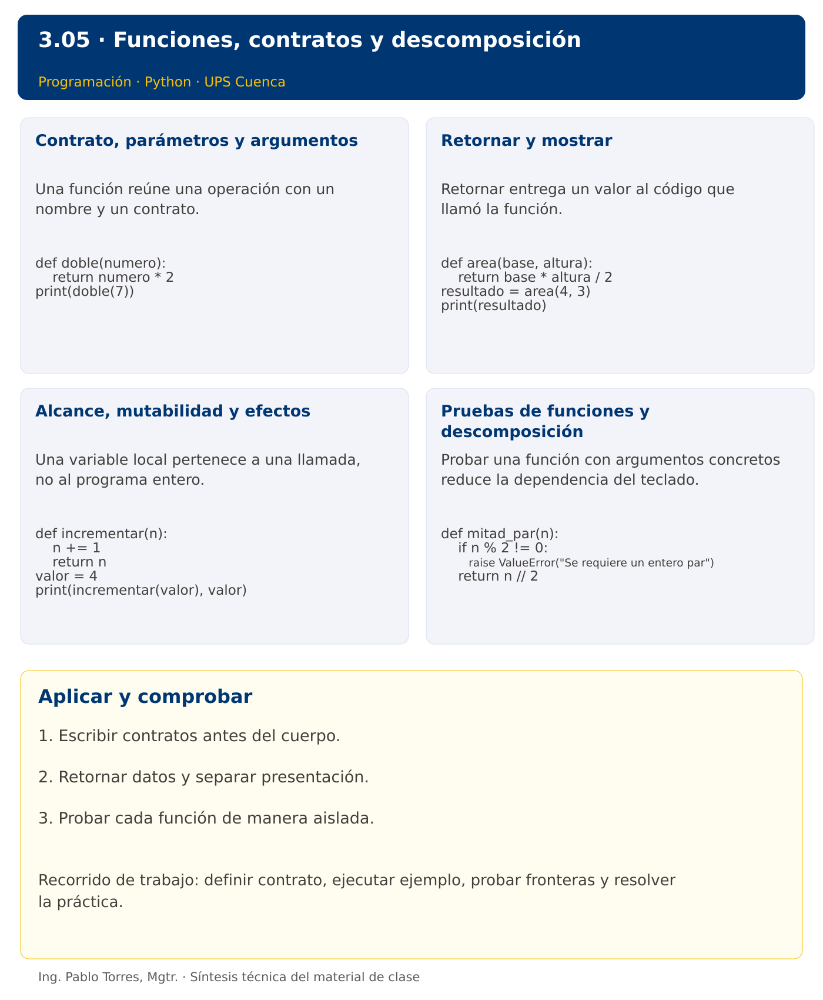

Programación

3.05 · Funciones, contratos y descomposición · Python
Autor: Ing. Pablo Torres, Mgtr.
Unidad 3: Lenguaje de Programación
Conceptos · Demostración · Práctica de clase · Lo esencial
Contexto. Calcular un resumen desde varios lugares del programa sin duplicar las reglas. Separar funciones que calculan de funciones que presentan resultados permite probar cada responsabilidad con datos concretos.
Prerrequisitos. Decisiones, ciclos y trazas.
1. Conceptos y ejemplos
1.1. Contrato, parámetros y argumentos
Una función reúne una operación con un nombre y un contrato. Los parámetros describen los datos que necesita; los argumentos son los valores de una llamada. Especificar precondiciones, resultado y efectos permite utilizarla sin leer su implementación. Elegir una responsabilidad precisa: validar una cantidad, calcular una tarifa o mostrar un informe. Evitar una función que simultáneamente lea, modifique datos y decida toda la aplicación.
Aplicar en Python. Definir con def y devolver con return. Los nombres de parámetros pertenecen al alcance local. Una anotación de tipo documenta, pero no valida automáticamente los argumentos. Comenzar con parámetros posicionales y luego usar nombres cuando aporten claridad.
def doble(numero):
return numero * 2
print(doble(7))
1.2. Retornar y mostrar
Retornar entrega un valor al código que llamó la función. Mostrar escribe en una salida y produce un efecto observable. Una función de cálculo que solo imprime dificulta reutilizar su resultado en otra operación. Separar ambas responsabilidades cuando el resultado se necesita después. return también finaliza la llamada, por lo que instrucciones posteriores en ese camino no se ejecutan.
Aplicar en Python. Una función sin return explícito devuelve None. print también devuelve None. No asignar resultado = print(...) esperando recuperar el texto mostrado. Usar return para resultados y dejar print en una capa de presentación.
def area(base, altura):
return base * altura / 2
resultado = area(4, 3)
print(resultado)
1.3. Alcance, mutabilidad y efectos
Una variable local pertenece a una llamada, no al programa entero. Evitar estado global para que una función dependa de argumentos visibles. Al pasar una colección, distinguir reasignar el parámetro de modificar el objeto compartido. La mutación se estudiará con listas; desde ahora, indicar si una función conserva o cambia sus entradas. Una función pura devuelve el mismo resultado para los mismos argumentos y no produce efectos externos.
Aplicar en Python. Reasignar un parámetro no reasigna el nombre usado por quien llama. Los nombres se enlazan a objetos. No usar listas mutables como valores predeterminados de parámetros: el mismo objeto se reutiliza entre llamadas.
def incrementar(n):
n += 1
return n
valor = 4
print(incrementar(valor), valor)
1.4. Pruebas de funciones y descomposición
Probar una función con argumentos concretos reduce la dependencia del teclado. Comparar resultado y valor esperado, incluir fronteras y entrada inválida. Descomponer un problema en funciones que tengan nombres relacionados con el dominio. No crear funciones solo para ocultar una línea si no mejora el contrato. Mantener la validación donde corresponda y evitar que una función devuelva a veces número y a veces mensaje de error sin especificarlo.
Aplicar en Python. Usar assert en comprobaciones docentes y excepciones explícitas para precondiciones incumplidas. No usar assert como validación de entrada de una aplicación porque puede desactivarse. raise ValueError comunica un argumento fuera de dominio.
def mitad_par(n):
if n % 2 != 0:
raise ValueError("Se requiere un entero par")
return n // 2
Los bloques breves anteriores ilustran una operación y pueden requerir variables o imports del contexto. Utilizar la demostración siguiente como programa completo.
Síntesis visual

2. Demostración guiada
Problema. Implementar costo_horas y comprobar un cálculo válido y una llamada con horas negativas.
Contrato de esta demostración. Recibir horas enteras no negativas y tarifa numérica no negativa. Retornar su producto sin imprimir dentro del cálculo. Lanzar error de argumento si existe un valor negativo. El llamador muestra el resultado y gestiona el error.
Fuente: ejemplos/demo.py.
def costo_horas(horas, tarifa):
if horas < 0 or tarifa < 0:
raise ValueError("Valores negativos")
return horas * tarifa
print(f"Costo: {costo_horas(3, 2.5):.2f}")
try:
costo_horas(-1, 2.5)
except ValueError as error:
print(error)
Ejecutar
Abrir una terminal dentro de 03/3.05-funciones/python/ejemplos/ y ejecutar:
python3 demo.py
En Windows, usar py en lugar de python3 si esa es la instalación disponible. Comprobar primero su versión.
Salida esperada
Costo: 7.50
Valores negativos
Interpretación. Seguir las asignaciones y los bloques en orden, identificar qué instrucción produce cada línea y contrastar con el contrato. Modificar un dato por vez y anticipar el resultado antes de ejecutar. La salida de referencia es una expectativa; el registro de verificaciones indica qué ejecuciones se realizaron.
Ejercicios prácticos progresivos
Resolver los siguientes ejercicios en orden. Entregar enunciado, fuente y resultado propio. Los casos mostrados permiten comprobar el contrato y no sustituyen una prueba adicional de frontera.
Ejercicio 01. Doble
Definir doble(n) y comprobar doble(6).
Caso de comprobación:
12
Ejercicio 02. Área
Definir area_rectangulo(base,altura) y comprobar 5 por 4.
Caso de comprobación:
20
Ejercicio 03. Paridad retornada
Definir es_par(n) que retorne bool. Mostrar el resultado para 7.
Caso de comprobación:
False
Ejercicio 04. Máximo de tres
Definir mayor(a,b,c) sin usar max. Probar 8, 3 y 8.
Caso de comprobación:
8
Ejercicio 05. Suma de rango
Definir sumar_rango(inicio,fin) inclusivo. Rechazar inicio mayor que fin. Probar 3 a 6.
Caso de comprobación:
18
Ejercicio 06. Factorial validado
Definir factorial(n) para enteros no negativos. Probar cero y cinco.
Caso de comprobación:
1 120
Ejercicio 07. Contar divisores
Definir contar_divisores(n) para n>0. Probar 12.
Caso de comprobación:
6
Ejercicio 08. Número perfecto
Definir es_perfecto(n) utilizando suma de divisores propios. Probar 6 y 8.
Caso de comprobación:
True False
Ejercicio 09. Máximo común divisor
Definir mcd(a,b) mediante Euclides. Aceptar enteros, usar valores absolutos y definir mcd(0,0)=0. Probar 48 y 18.
Caso de comprobación:
6
Ejercicio 10. Composición
Definir costo(cantidad,precio) y aplicar_descuento(total,porcentaje). Validar dominios y componerlas para 4 artículos a 12 con 25% de descuento.
Caso de comprobación:
36.00
3. PC3.05 · Práctica de clase
Definir es_primo(n), contar_primos(inicio, fin) y una función de presentación. Aceptar enteros y un intervalo con inicio <= fin. Considerar que números menores que 2 no son primos. Retornar resultados desde las funciones de cálculo y mostrar desde la función de presentación. Rechazar intervalos invertidos con un error explícito.
Requisitos y restricciones
- Resolver en una sola versión, Python o Java.
- Mantener nombres y responsabilidades indicados; explicar cualquier adaptación idiomática.
- Aplicar únicamente los conceptos ya introducidos.
- Conservar las entradas cuando el enunciado lo exija.
- Distinguir valores fuera de contrato de errores que el programa debe gestionar.
Casos de aceptación de la PC
| Entrada / escenario | Resultado esperado |
|---|---|
| 2, 10 | 4 primos |
| -3, 1 | 0 primos |
| 7, 7 | 1 primo |
| 10, 2 | intervalo inválido |
Probar y registrar evidencia
Crear una carpeta personal PC3.05 separada de las demostraciones. Guardar cada caso con entrada, resultado esperado y resultado real. Ejecutar python3 solucion.py desde esa carpeta. Para entradas de teclado, guardar casos/entrada-01.txt y redirigirla con < casos/entrada-01.txt. Para funciones, crear llamadas con los datos de la tabla.
- Registrar
evidencias/PC3.05.mdcon comandos, versión real, salidas y explicación. - Crear un commit funcional como
feat(pc3.05): implementar-regla-principal. - Obtener el hash real con
git rev-parse HEADy anotarlo en la evidencia. - Revisar el cambio con
git show HASHy comparar avances congit diff HASH_ANTERIOR HASH_ACTUAL. Sustituir los marcadores por hashes reales. - Agregar una prueba de frontera distinta de las incluidas y justificar qué error detectaría.
No se requiere proyecto acumulativo ni rúbrica individual de esta PC.
Lo esencial
- Escribir contratos antes del cuerpo.
- Retornar datos y separar presentación.
- Probar cada función de manera aislada.